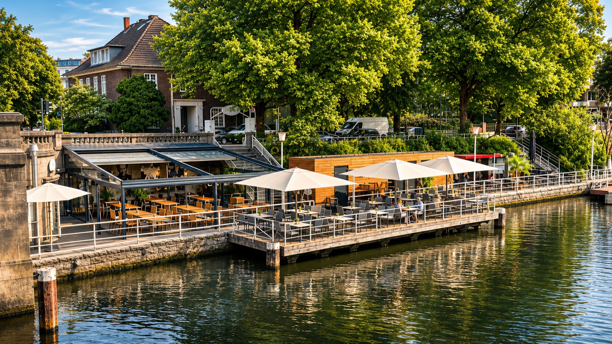
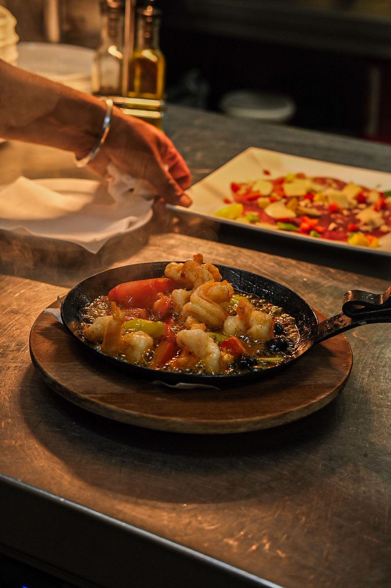
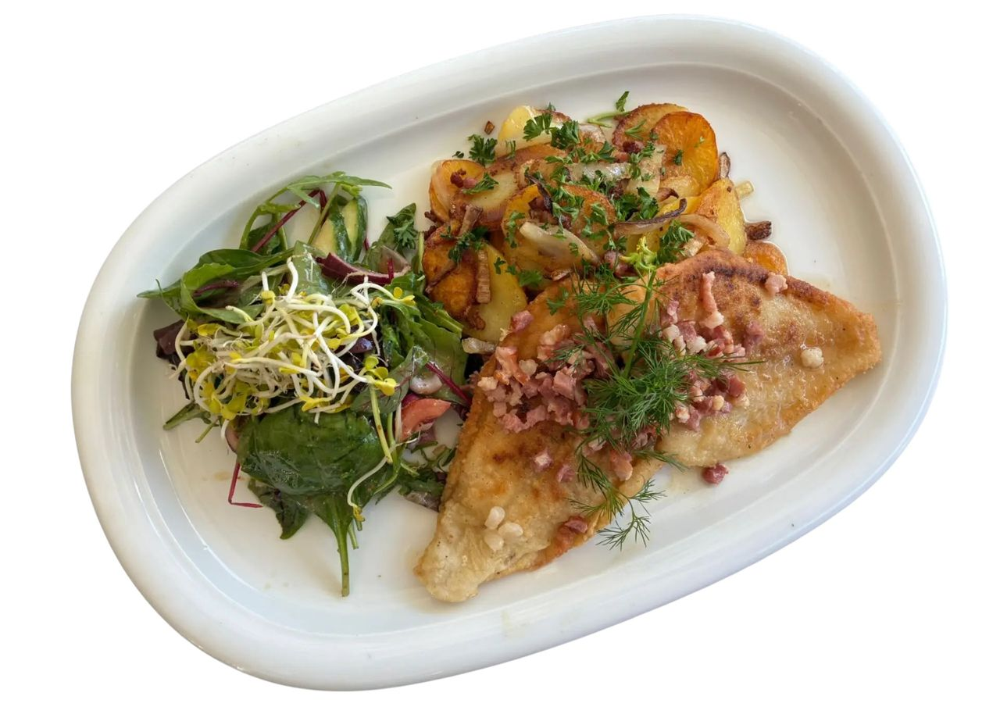
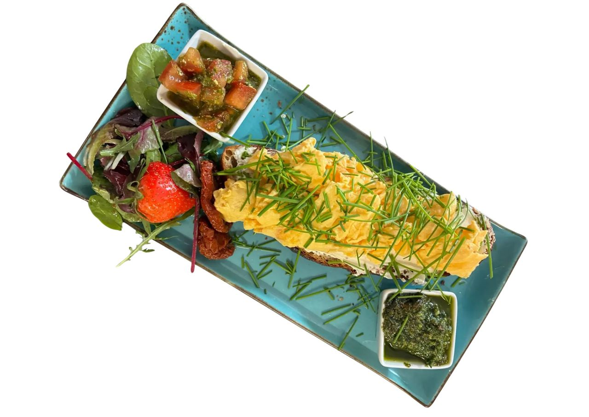
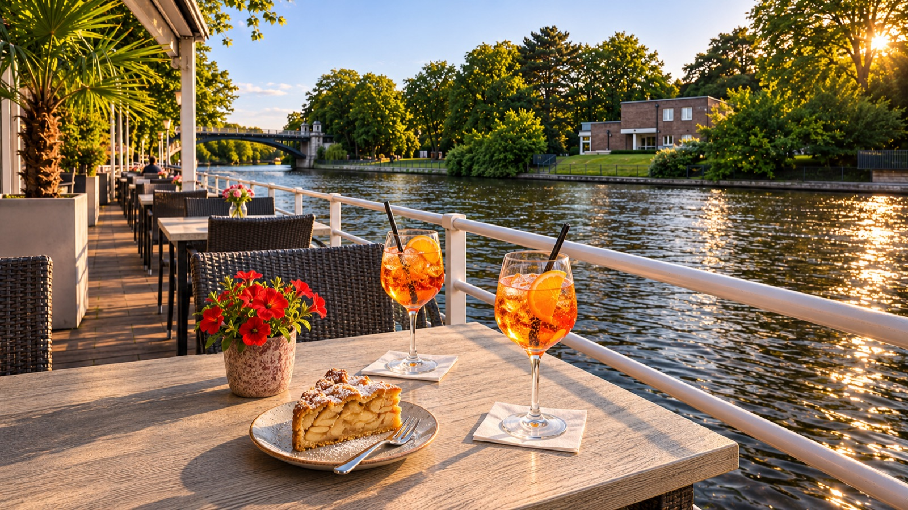
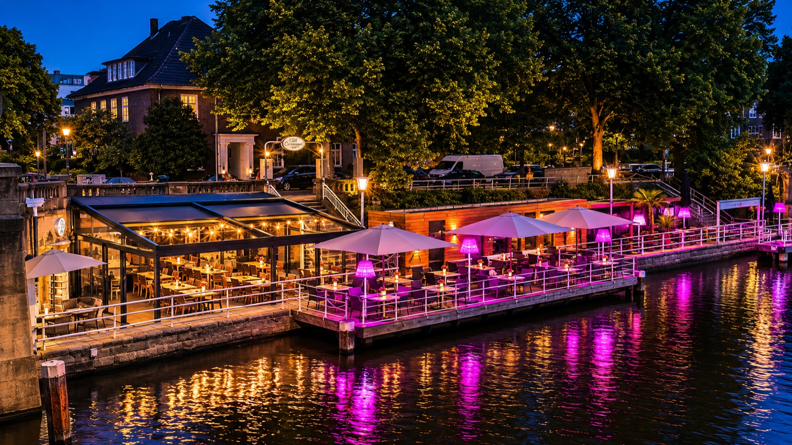

Restaurant & Eventlocation in Hamburg-Winterhude
Café Leinpfad
Hamburg ist schöner am Wasser.
Leinpfad Ecke Hudtwalckerstraße
Willkommen am Alsterlauf.
Die Terrasse
Ihr Platz direkt über dem Wasser.
Aperol, White Hugo, Limoncello Spritz
Ein Spritz, wenn die Sonne sinkt.
Bis bald am Wasser.
Winterpause bis 1. April 2027. Gefeiert wird trotzdem: Sichern Sie sich jetzt Ihren Wunschtermin für die neue Saison.
Wunschtermin anfragenMoin aus Winterhude
Kaffee am Morgen, Steak vom heißen Stein am Mittag, ein Spritz am Abend. Im Café Leinpfad sitzen Sie direkt über dem Alsterlauf, während die Alsterdampfer vor der Terrasse anlegen.
- Terrasse auf dem Wasser und wettergeschützter Innenbereich
- Am Fähranleger Winterhuder Fährhaus, 300 m zur U1 Hudtwalckerstraße
- Feiern und Firmenevents bis 250 Gäste

Speisen
Hanseatische Klassiker mit italienischer Leichtigkeit. Mittagstisch Montag bis Freitag von 12 bis 15 Uhr, Langschläfer-Frühstück bis 15 Uhr.





Drinks am Wasser
Aperol, White Hugo, Limoncello Spritz, Pornstar Martini, Basil Smash und unsere eigenen Leinpfad-Limonaden. Dazu sorgfältig ausgesuchte Weine.
Am schönsten auf der Terrasse, wenn die Abendsonne über den Alsterlauf fällt.

Feiern über dem Alsterlauf
Sommerfest, Teamevent, Hochzeit, Geburtstag oder Taufe. Ein Ansprechpartner, ein Haus: Küche, Bar, Technik und Terrasse gehören zusammen.
- Gäste
- bis 250
- Räume
- Terrasse am Wasser und Innenbereich
- Küche
- Buffet, Menü, BBQ oder Fingerfood aus dem Haus
- Technik
- Musikanlage und DJ-Möglichkeit, Schirme, Zelte auf Anfrage
Leinpfad Ecke Hudtwalckerstraße, Hamburg-Winterhude
Mit der U-Bahn
U1 bis Hudtwalckerstraße, dann 300 Meter am Wasser entlang.
Mit dem Alsterdampfer
Anleger Winterhuder Fährhaus, direkt vor unserer Terrasse.
Mit dem Auto
Parkhaus gegenüber, in der kleinen Komödie.
Bis bald am Wasser
Neue Saison ab 1. April 2027. Veranstaltungsanfragen beantworten wir das ganze Jahr.